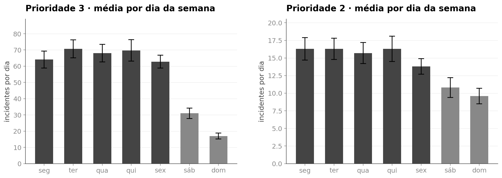

<style>
/* ═══ slide 6 · o ritmo da semana ════════════════════════════════════════════
   Um assunto só: de onde vêm as pistas de calendário do modelo de volume.

   O ponto do gráfico não é que sábado é menor, que qualquer um sabe. É que o
   intervalo de 95% se SOBREPÕE entre os cinco dias úteis, e é isso que
   justifica o modelo tratar dia útil como um nível único em vez de aprender
   sete perfis. Feature nascida de teste, não de suposição.

   Figura matplotlib em dpi 200, de _figuras_modelos.py.
   ══════════════════════════════════════════════════════════════════════════ */
.smn .body{padding-top:14px}
.smn .tt{font-size:52px;letter-spacing:-1.9px}
.smn .fig{display:block;border-radius:10px}
.smn .quadro{padding:22px 26px}

/* as duas leituras, com fio de 1px entre elas */
.smn .lei{display:flex;flex-direction:column}
.smn .li{display:flex;align-items:flex-start;gap:15px;padding:20px 0;
  border-bottom:1px solid #DCE4EF}
.smn .li:last-child{border-bottom:none}
.smn .li .ic{width:21px;height:21px;margin-top:3px;flex-shrink:0;
  color:var(--accent)}
.smn .li .cab{font-size:12px;font-weight:700;letter-spacing:1.6px;
  text-transform:uppercase;color:var(--tx2)}
.smn .li p{font-size:15.5px;line-height:1.48;color:var(--tx);margin-top:6px}
.smn .li p b{color:var(--head);font-weight:700}

.smn .fecho{display:flex;align-items:flex-start;gap:12px;margin-top:auto;
  padding:0;font-size:16.5px;line-height:1.45;color:var(--tx);
  border-top:1px solid #DCE4EF;padding-top:20px}
.smn .fecho .ic{width:20px;height:20px;color:var(--accent);margin-top:2px;
  flex-shrink:0}
.smn .fecho b{color:var(--head);font-weight:700}

/* ── variação A · figura em largura cheia, as leituras numa faixa embaixo ── */
.sm-a .cena{flex:1;display:flex;flex-direction:column;align-items:center;
  justify-content:center;gap:24px;margin-top:12px;min-height:0}
.sm-a .fig{width:1080px}
.sm-a .lei{flex-direction:row;width:1132px}
.sm-a .li{flex:1;border-bottom:none;padding:0 26px 0 0}
.sm-a .li + .li{border-left:1px solid #DCE4EF;padding-left:26px}

/* ── variação B · figura à esquerda, as leituras na coluna da direita ── */
.sm-b .cena{flex:1;display:flex;align-items:flex-start;gap:44px;margin-top:24px;
  min-height:0}
.sm-b .quadro{flex-shrink:0}
.sm-b .fig{width:980px}
.sm-b .lei{width:360px}
</style>

<section class="slide light smn sm-a" data-slide="6" data-var="a" data-quem="ana">
  <div class="mesh"></div><div class="grid-bg"></div>
  <div class="hd">
    <div class="bi"><svg viewBox="0 0 28 28" fill="none"><path d="M6 22L12 14L16 17L22 8" stroke="#fff" stroke-width="2.2" stroke-linecap="round" stroke-linejoin="round"/><circle cx="22" cy="8" r="3" stroke="#3B82F6" stroke-width="1.5"/><circle cx="22" cy="8" r="1.2" fill="#3B82F6"/></svg></div>
    <div class="bn">Cronos</div><span class="bt">BANCA FINAL &middot; 15/09/2026</span>
    <div class="tag">Dias úteis de 2025</div>
  </div>
  <div class="body">
    <span class="eb"><span class="rv" style="--d:240ms">As pistas de calendário</span></span>
    <h1 class="tt"><span class="mask" style="--d:340ms"><span>O ritmo da semana</span></span></h1>

    <div class="cena">
      <div class="quadro cartao rv3" style="--d:620ms">
        
      </div>

      <div class="lei rv3" style="--d:1080ms">
        <div class="li">
          <svg class="ic" viewBox="0 0 24 24"><path d="M3 12h18"/><path d="M7 8.4v7.2M12 8.4v7.2M17 8.4v7.2"/></svg>
          <div>
            <div class="cab">Os cinco dias úteis</div>
            <p>Os intervalos de 95% <b>se sobrepõem</b> entre segunda e sexta, nas duas prioridades.</p>
          </div>
        </div>
        <div class="li">
          <svg class="ic" viewBox="0 0 24 24"><rect x="3.4" y="4.6" width="17.2" height="16" rx="2.4"/><path d="M3.4 9.6h17.2"/><path d="M8.4 2.6v3.4M15.6 2.6v3.4"/><path d="M15.4 14.4h2.6"/></svg>
          <div>
            <div class="cab">A decisão do modelo</div>
            <p>Tratar <b>dia útil como um nível único</b>, em vez de aprender sete perfis separados.</p>
          </div>
        </div>
      </div>
    </div>

    <div class="fecho rv" style="--d:1400ms">
      <svg class="ic" viewBox="0 0 24 24"><circle cx="12" cy="12" r="9.4"/><path d="M12 7.6v4.8"/><path d="M12 16.2h.01"/></svg>
      <span>As duas pistas de calendário do modelo são <b>dia útil ou fim de semana</b> e <b>se é feriado</b>. Nenhuma delas foi suposta: as duas saíram deste teste.</span>
    </div>
  </div>
  <div class="ft"></div>
</section>

<section class="slide light smn sm-b" data-slide="6" data-var="b" data-quem="ana">
  <div class="mesh"></div><div class="grid-bg"></div>
  <div class="hd">
    <div class="bi"><svg viewBox="0 0 28 28" fill="none"><path d="M6 22L12 14L16 17L22 8" stroke="#fff" stroke-width="2.2" stroke-linecap="round" stroke-linejoin="round"/><circle cx="22" cy="8" r="3" stroke="#3B82F6" stroke-width="1.5"/><circle cx="22" cy="8" r="1.2" fill="#3B82F6"/></svg></div>
    <div class="bn">Cronos</div><span class="bt">BANCA FINAL &middot; 15/09/2026</span>
    <div class="tag">Dias úteis de 2025</div>
  </div>
  <div class="body">
    <span class="eb"><span class="rv" style="--d:240ms">As pistas de calendário</span></span>
    <h1 class="tt"><span class="mask" style="--d:340ms"><span>O ritmo da semana</span></span></h1>

    <div class="cena">
      <div class="quadro cartao rv3" style="--d:620ms">
        
      </div>

      <div class="lei">
        <div class="li rv" style="--d:1020ms">
          <svg class="ic" viewBox="0 0 24 24"><path d="M3 12h18"/><path d="M7 8.4v7.2M12 8.4v7.2M17 8.4v7.2"/></svg>
          <div>
            <div class="cab">Os cinco dias úteis</div>
            <p>Os intervalos de 95% <b>se sobrepõem</b> entre segunda e sexta, nas duas prioridades.</p>
          </div>
        </div>
        <div class="li rv" style="--d:1200ms">
          <svg class="ic" viewBox="0 0 24 24"><rect x="3.4" y="4.6" width="17.2" height="16" rx="2.4"/><path d="M3.4 9.6h17.2"/><path d="M8.4 2.6v3.4M15.6 2.6v3.4"/><path d="M15.4 14.4h2.6"/></svg>
          <div>
            <div class="cab">A decisão do modelo</div>
            <p>Tratar <b>dia útil como um nível único</b>, em vez de aprender sete perfis separados.</p>
          </div>
        </div>
      </div>
    </div>

    <div class="fecho rv" style="--d:1460ms">
      <svg class="ic" viewBox="0 0 24 24"><circle cx="12" cy="12" r="9.4"/><path d="M12 7.6v4.8"/><path d="M12 16.2h.01"/></svg>
      <span>As duas pistas de calendário do modelo são <b>dia útil ou fim de semana</b> e <b>se é feriado</b>. Nenhuma delas foi suposta: as duas saíram deste teste.</span>
    </div>
  </div>
  <div class="ft"></div>
</section>
